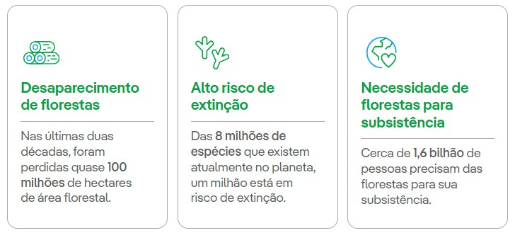
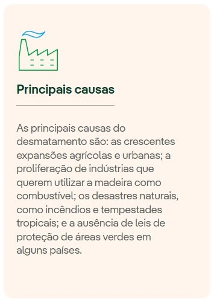
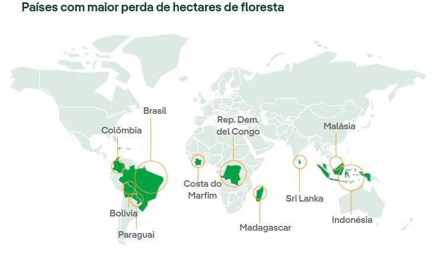

O ODS 15 busca proteger, recuperar e promover o uso sustentável dos ecossistemas terrestres, gerir de
forma
sustentável as florestas,
combater a desertificação, deter e reverter a degradação da terra e deter a perda de biodiversidade.
para que no futuro, nossos filhos possam respirar um ar mias puro e poder admirar a natureza mais verde.
Causas

Reverter essa realidade se converteu em um objetivo primordial em âmbito internacional. Por este motivo,
proteger, recuperar e promover o
uso sustentável dos ecossistemas terrestres, gerir de forma sustentável as florestas, combater a
desertificação,
deter e reverter a
degradação da terra e deter a perda de biodiversidade é o ODS 15 dos 17 Objetivos de Desenvolvimento
Sustentável
da ONU, aprovados
em setembro de 2015 como parte da Agenda 2030.
Além disso, a atividade humana, agravada pelo avanço das mudanças climáticas, é a principal causa da
degradação
da terra, que afeta
diretamente o bem-estar de 1,3 bilhão de pessoas. Se a terra continuar a ser empobrecida no mesmo ritmo,
haverá
mais 1,5 bilhão de hectares
de terra degradada até 2030. Para que a meta de 2030 de um mundo neutro em termos de degradação da terra
seja
alcançada, é necessário
não apenas evitar mais deterioração, mas também restaurar pelo menos 1 bilhão de hectares de terras já
degradadas. 
Com relação à extinção de espécies, é preciso ter em mente que esse é um efeito irreversível. Em nível
mundial, o
índice da Lista Vermelha
— um indicador essencial da saúde da biodiversidade mundial — se deteriorou em 4% entre 2015 e 2023.
Isso
equivale a 11% nas três décadas
desde 1993, com cada década se deteriorando mais rapidamente do que a anterior. Atualmente, 21% das
espécies
de
répteis correm risco de
extinção e, das 8 milhões de espécies que existem atualmente no planeta, um milhão está em risco.
Apesar dos esforços para atingir as metas desse objetivo, o Relatório de Acompanhamento dos ODS 2023 da
ONU
não
oferece boas perspectivas
e observa que, apesar de algum progresso na gestão sustentável das florestas, nas áreas protegidas e na
adoção
de valores nacionais de
biodiversidade e responsabilidade pelo capital natural, a maioria das melhorias foi modesta.
31% da superfície mundial está coberta por florestas, que abrigam mais de 80% de todas as espécies
terrestres,
tanto de animais quanto
de plantas e insetos. Os ecossistemas terrestres também são vitais para a manutenção da vida humana,
contribuem
para mais da metade
do PIB mundial e influenciam diversos valores culturais, espirituais e econômicos. No entanto, de acordo
com
dados da ONU, quase 100
milhões de hectares de área florestal líquida foram perdidos nas últimas duas décadas.

Metas do ODS 15:
15.1 Até 2020, assegurar a conservação, recuperação e uso sustentável de ecossistemas terrestres e de
água doce interiores e seus serviços, em especial florestas, zonas úmidas, montanhas e terras áridas, em
conformidade com as obrigações decorrentes dos acordos internacionais.
15.2 Até 2020, promover a implementação da gestão sustentável de todos os tipos de florestas, deter o
desmatamento, restaurar florestas degradadas e aumentar substancialmente o florestamento e o
reflorestamento globalmente.
15.3 Até 2030, combater a desertificação, restaurar a terra e o solo degradado, incluindo terrenos
afetados pela desertificação, secas e inundações, e lutar para alcançar um mundo neutro em termos de
degradação do solo.
15.4 Até 2030, assegurar a conservação dos ecossistemas de montanha, incluindo a sua biodiversidade,
para melhorar a sua capacidade de proporcionar benefícios que são essenciais para o desenvolvimento
sustentável.
15.5 Tomar medidas urgentes e significativas para reduzir a degradação de habitat naturais, deter a
perda de biodiversidade e, até 2020, proteger e evitar a extinção de espécies ameaçadas.
15.6 Garantir uma repartição justa e equitativa dos benefícios derivados da utilização dos recursos
genéticos e promover o acesso adequado aos recursos genéticos.
15.7 Tomar medidas urgentes para acabar com a caça ilegal e o tráfico de espécies da flora e fauna
protegidas e abordar tanto a demanda quanto a oferta de produtos ilegais da vida selvagem.
15.8 Até 2020, implementar medidas para evitar a introdução e reduzir significativamente o impacto de
espécies exóticas invasoras em ecossistemas terrestres e aquáticos, e controlar ou erradicar as espécies
prioritárias.
15.9 Até 2020, integrar os valores dos ecossistemas e da biodiversidade ao planejamento nacional e
local, nos processos de desenvolvimento, nas estratégias de redução da pobreza e nos sistemas de contas.
15.a Mobilizar e aumentar significativamente, a partir de todas as fontes, os recursos financeiros para
a conservação e o uso sustentável da biodiversidade e dos ecossistemas.
15.b Mobilizar recursos significativos de todas as fontes e em todos os níveis para financiar o manejo
florestal sustentável e proporcionar incentivos adequados aos países em desenvolvimento para promover o
manejo florestal sustentável, inclusive para a conservação e o reflorestamento.
15.c Reforçar o apoio global para os esforços de combate à caça ilegal e ao tráfico de espécies
protegidas, inclusive por meio do aumento da capacidade das comunidades locais para buscar oportunidades
de subsistência sustentável.
alguma duvida? Talvez esses videos possam te ajudar!